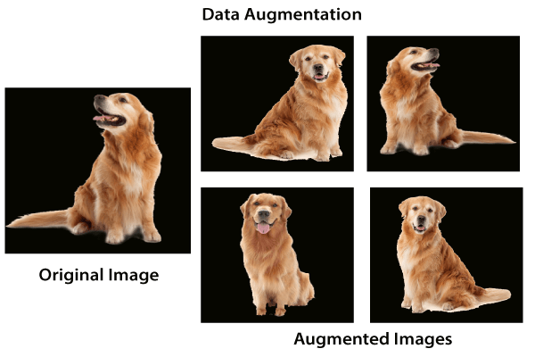
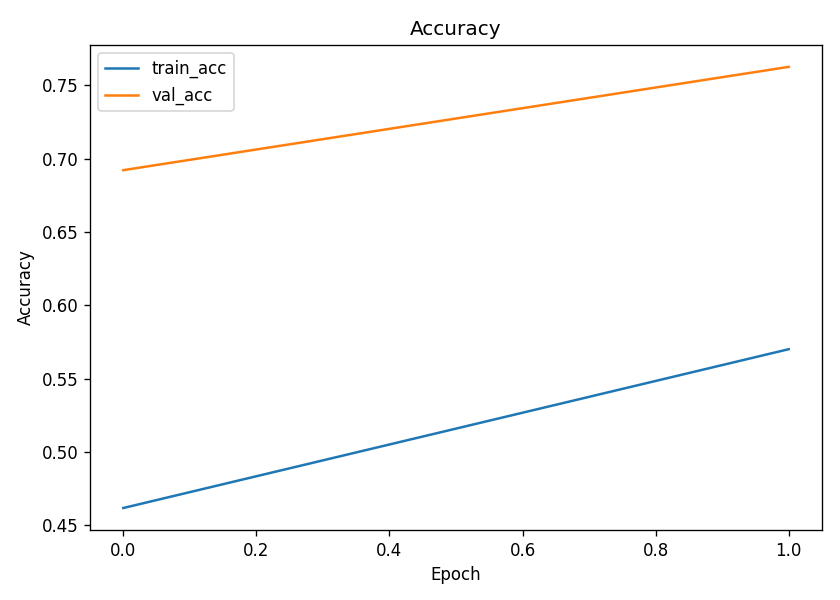
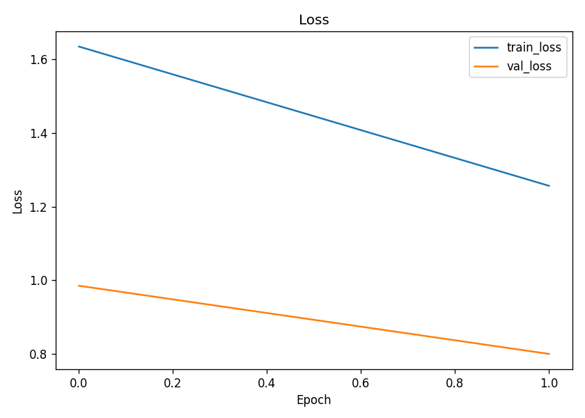
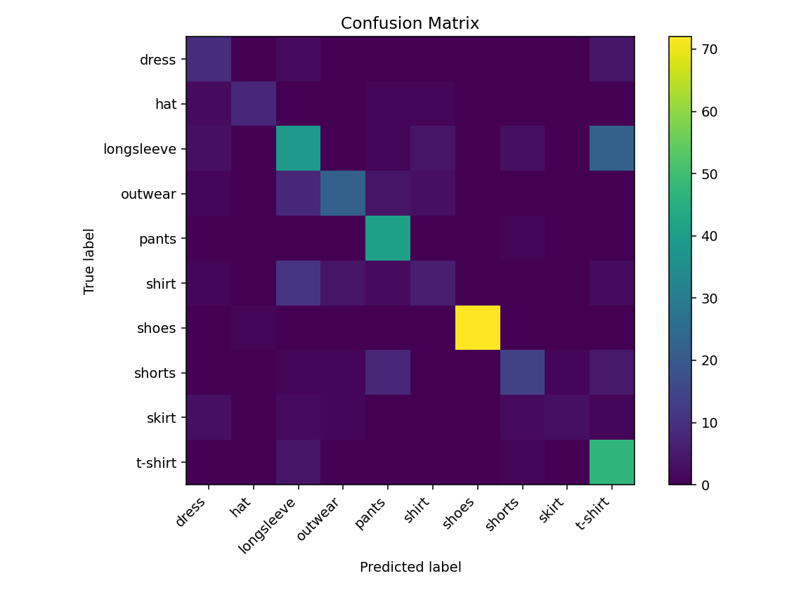

This project focuses on building an image classification system for clothing categories using deep learning. The model was trained on a dataset of 3,800+ images, spanning 10 clothing classes such as dresses, shirts, pants, shoes, and more. Using Convolutional Neural Networks (CNNs) with transfer learning (Xception model), we demonstrate how neural networks can learn visual patterns from images and classify them into categories with good accuracy.
Image classification is a key task in computer vision where the goal is to assign an input image to one of several predefined categories. Deep learning, particularly with CNNs, has become the state-of-the-art approach due to its ability to automatically learn hierarchical features directly from raw pixels. Instead of relying on handcrafted features, CNNs stack multiple convolutional layers that progressively detect edges, shapes, textures, and high-level concepts. In this project, we leverage transfer learning by reusing a pretrained Xception network, adapting it to classify our clothing dataset.
The dataset contains over 3,800 images of clothing items across 10 categories.
Each image is of moderate resolution and was resized to 150×150 for training efficiency.
The dataset is split into:
This split ensures that the model is trained on one portion of the data, validated on another during training to prevent overfitting, and tested on unseen images to measure final performance. Such a setup simulates real-world deployment where the model must generalize to new inputs.
TensorFlow, developed by Google, is one of the most widely used frameworks for building and training machine learning models. While TensorFlow provides low-level operations for defining computational graphs, Keras sits on top as a high-level API, making it easy to construct and train neural networks with just a few lines of code.
For this project, Keras was used to build a pipeline that loads, preprocesses, and augments images, while TensorFlow handles the heavy computations under the hood.
Although Xception typically works with 299×299 images, we opted for 150×150 resolution due to hardware limitations, which still provided good results.
CNNs are specialized neural networks designed for grid-like data such as images. Each convolutional layer applies filters that detect visual features (edges, corners, textures). As layers stack deeper, they combine simpler features into more abstract ones (like sleeves, collars, or shoe shapes). The final representation is a dense vector summarizing the image’s contents, which feeds into fully connected (dense) layers for classification.
In this project, we used Xception, a pretrained CNN with 71 layers. We froze the base convolutional layers (to reuse generic visual features) and trained new dense layers specific to our dataset. This approach reduces training time and improves performance with limited data.
The training was carried out with:
Additional layers were added on top of Xception:
GlobalAveragePooling2D to reduce spatial dimensionsDense(100) fully connected layerDropout for regularizationDense(10) output layer (for 10 classes)The final model contained ~21 million parameters, with ~206k trainable (dense layers) and the rest frozen from the pretrained base.
Found 3068 images belonging to 10 classes.
Found 341 images belonging to 10 classes.
Detected 10 classes: ['dress','hat','longsleeve','outwear','pants','shirt','shoes','shorts','skirt','t-shirt']
Model: "xception_transfer" Total params: 21,067,390
Trainable params: 205,910 Non-trainable params: 20,861,480
Epoch 1/2 - val_accuracy: 0.6921 (saved checkpoint)
Epoch 2/2 - val_accuracy: 0.7625 (saved checkpoint)
Test accuracy: 0.7016 | Test loss: 0.8254
To improve generalization, ImageDataGenerator was used to apply augmentations such as random rotation (up to 25°), width/height shifts, shearing, zooming, and flips. This effectively expands the training dataset by creating slightly modified versions of each image, helping the model become robust to variations.
After 2 epochs of training (trial run), the model achieved:
precision recall f1-score support
dress 0.47 0.60 0.53 15
hat 0.89 0.67 0.76 12
longsleeve 0.58 0.54 0.56 72
outwear 0.79 0.58 0.67 38
pants 0.72 0.98 0.83 42
shirt 0.43 0.23 0.30 26
shoes 1.00 0.99 0.99 73
shorts 0.67 0.47 0.55 30
skirt 0.75 0.25 0.38 12
t-shirt 0.58 0.90 0.71 52
Overall Test Accuracy: 70.1% Macro F1-score: ~0.63 Weighted F1-score: ~0.69
Saved training plots:
  These results demonstrate that even with a modest dataset and limited epochs, transfer learning with CNNs can deliver solid performance. With more epochs and fine-tuning, accuracy can be improved further.